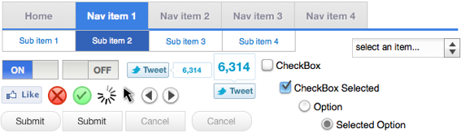

Download Stencils.
5mb zip contains Keynote ’09 compatible stencils
Or fork it on GitHub to get the latest.
Some of the UI stencils you'll find inside
Download Examples

Why did I create these stencils?
I want to spend less time creating wireframes, and more time imagining new features. I built these for myself to quickly create clickable prototypes to send to clients.
I’m also inspired by projects people I know have done. Specifically John Resig (jQuery) and Paul Irish (HTML5 Boilerplate).
Free stuff is awesome, especially when it furthers a cause like improving the quality of websites on the internet.
Keynote UX lowers the bar so more people can create websites with a superior user experience. Use Keynote UX stencils as a base, and build your own on top.
I use the Keynote UX stencils every day in my job, and I hope you will too!
How to get started.
Don’t worry - it’s dead easy.
Get Started making Wireframes
- Download Keynote UX
- Unzip the file and open “Keynote UX”
- Drag the “Slides” handle down on the left hand side to show the master slides
- Use command-c to copy and command-v to paste from the templates into your slides.
Make Keynote UX a permanent theme
- Click “File” and then “Save Theme”
- Next time you start Keynote, look for “Keynote UX” in the list of themes in the Theme Chooser
Who made this?
Head of Product at ChallengePost